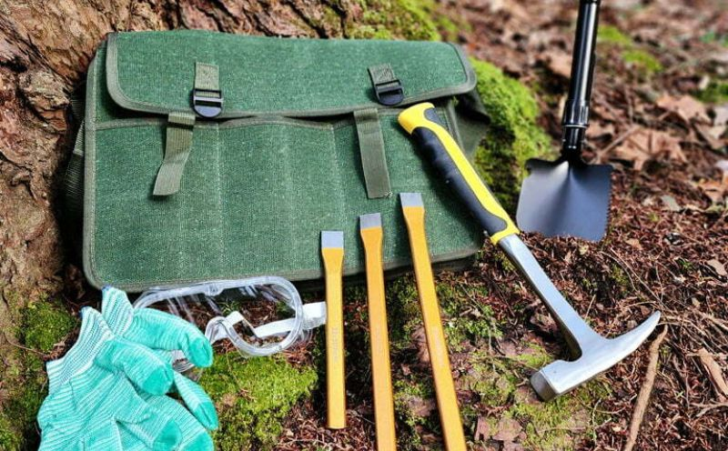
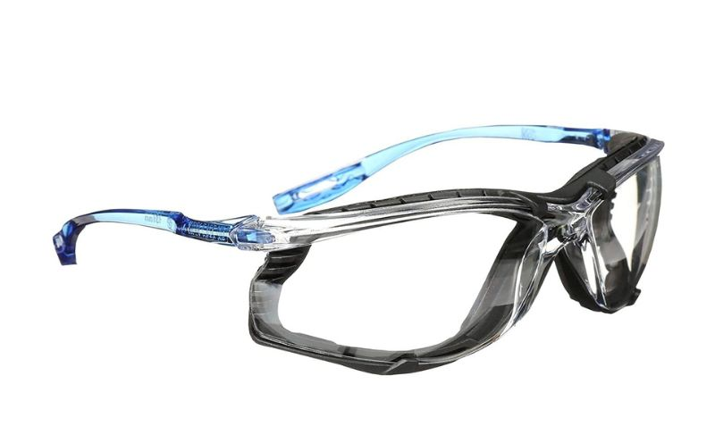

The Ultimate Guide to the Best Rockhounding Tools for Beginners
Rockhounding is a captivating hobby, but it is more than just a hobby, it is a great way to get outside and explore nature. It offers one the opportunity to explore the natural beauty of the earth, uncover hidden gemstones, minerals, and fossils, and gain a deeper understanding of geology.
But there are a few things to consider when planning your first rockhounding trip, one of which is getting the right rockhounding tools for a newbie. The right tools can significantly enhance your experience and increase your chances of finding unique specimens. Trust me, rockhounding is a lot more fun if you are finding some cool rocks and minerals along the way, and that is what the right tools will help you achieve.
In this comprehensive guide, we'll introduce you to an extensive selection of the best rockhounding tools for beginners, ensuring you're well-equipped for your rockhounding adventures.
Types of Rockhounding Tools
Before we delve into specific tools, let's categorize the essential types of equipment you'll need as a beginner rockhound:
- Safety Gear
- Collecting Tools
- Storage and Organization
- Identification Tools
1. Safety Gear
Prioritizing safety is paramount in rockhounding. The right safety tools provide the necessary protection for your eyes, hands, and head. They include;
- Safety Glasses: They protect your eyes from potential flying debris, especially when using striking tools.
- Gloves: Necessary to keep your hands safe and free from cuts or abrasions.
- Sturdy Footwear: Ensure you have suitable, rugged shoes for rocky terrain. This will prevent injury to your feet, ankles, and knees.
- Hat: This protects your head from harmful rays of the sun, as well as from falling rocks or debris.
2. Collecting Tools

These tools are designed to help you unearth, collect, and transport specimens. They include;
- Rock Hammer: This versatile tool is crucial for breaking rocks, revealing specimens, and exposing layers.
- Chisels and Pry Bars: These aids are invaluable for separating rocks and unearthing treasures.
- Rock Pick: Opt for one with a pointed end for digging and prying.
- Backpack: This will allow you to carry all your tools comfortably.
- Geological Hammer: Ideal for more precise work and splitting rocks.
3. Storage and Organization

These aspect of tools are important to keep your rock and mineral collection organized. They include;
- Ziplock Bags: Useful for storing small finds and keeping them separate.
- Plastic Containers: Larger containers for bigger specimens.
- Field Notebook: Keep records of your finds, including location, date, and any noteworthy details.
- Permanent Markers: For labeling bags and containers.
4. Identification Tools

Yes, it is fun digging to find rocks, fossils, and minerals, but identifying the rocks and minerals you find is an integral and fun part of the rockhounding experience too.
- Field Guidebook: A comprehensive field guidebook for the identification of rocks, minerals, and fossils is an invaluable tool especially one specific to your region.
- Rock and Mineral Identification Kit: This contains a range of tools, including a magnifying glass, hardness testing kit, streak plate, and more.
Best Rockhounding Tools for Beginners
If you’re just starting out, you don’t need all the bells and whistles. Start small with a rock hammer, pick, bucket, field guidebook, and identification tools. As you get more comfortable with the hobby and want to explore other areas in your region, consider adding more specialized tools. Here are some top tools we will recommend for you as a beginner rockhound:
1. Rock Hammer:
- Estwing Rock Pick: The Estwing rock pick is known for its durability and comfortable grip, it's a reliable choice for beginners as it serves both as a hammer and a rock pick.
- SE 20-oz. Rock Pick Hammer: The 20-oz rock pick hammer is an affordable and practical option that combines a pick and hammer in one tool.
2. Safety Glasses:
- 3M Virtua CCS Protective Eyewear: 3M Virtua CCS protective eyewear is not only protective but also comfortable for long hours of use.
3. Chisels and Pry Bars:
- Estwing Gad Pry Bar: The Estwing gad pry bar is a sturdy and effective tool for prying apart rocks.
- Stanley 16-298 3 Piece Cold Chisel Kit: A great option for your chisel is the Stanley 16-298 chisel kit. It is a set of different chisels for various tasks.
4. Rock Pick:
- Estwing Rock Pick: Estwing is a top choice because of its versatility and durability.
- Bond Hickory Handle Geological Pick: The Bond Hickory Handle geological pick is a reliable and affordable alternative to the Estwing rock pick, as it flaunts a wooden handle.
5. Geological Hammer:
- Garrett Pro-Pointer AT Metal Detector: The Garrett Pro-Pointer AT Metal Detector is useful for pinpointing small finds in the ground.
- Estwing Geological Rock Pick: As always, this is a classic choice known for its strength and balance.
6. Field Notebook:
- Rite in the Rain All-Weather Side-Spiral Notebook: This notebook is waterproof and rugged for outdoor note-taking.
7. Magnifying Glass:
- Carson MicroBrite Plus 60x-120x LED Lighted Pocket Microscope: One of the best and ideal magnifying glasses for close-up examination of minerals and fossils is the Carson MicroBrite Plus 60x-120x LED Lighted Pocket Microscope.
You don’t need to invest in a lot of tools or equipment to get started rockhounding. A basic set of tools can be purchased and these will serve you well as you learn about rocks and minerals.
Safety Tips for Rockhounding
Now that you are set with the right tools, safety is the next step. Ensuring your safety during rockhounding adventures is of utmost importance. Here are some essential safety tips to keep in mind:
- Always wear safety glasses and gloves to protect your eyes and hands.
- Let someone know your location and expected return time before heading out.
- Be aware of your surroundings and watch for unstable cliffs, overhangs, or falling rocks.
- Respect private property and obtain necessary permissions before collecting rocks.
- Pack essentials like water, snacks, first aid supplies, and a map or GPS device.
Conclusion
Now equipped with the best rockhounding tools for beginners and the knowledge to stay safe in the field, you're well-prepared to start your rockhounding journey.
The selection of tools mentioned here will not only enhance your experience but also ensure your safety during your outdoor adventures. So go ahead, explore the world of rocks, minerals, and fossils, and embark on an exciting journey of discovery.
Remember to stay safe, respect the environment, and have fun rockhounding!
Looking for rockhounding sites in your state? Click here to locate a rockhounding site near you.